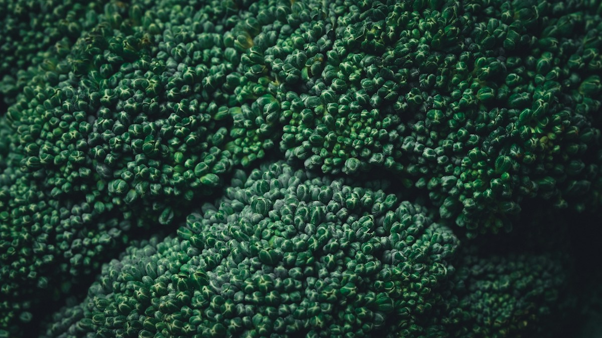

الكربوهيدرات اليوم
0 غرام
متابعة وفق خطتك الشخصية

مكانك لفهم وجبتك، ومتابعة الكربوهيدرات
والسكريات وفق خطتك الشخصية.
متابعة وفق خطتك الشخصية
صور توضيحية. القيم للمكونات النموذجية القابلة للتعديل؛ قد تختلف الإضافات في الصورة عن وجبتك.
اختر صورة، حلّلها، ثم راجع المكونات والكمية.
الصور توضيحية، والقيم تقديرات للمكونات والكميات المعروضة. راجعها وفق ملصقك وطريقة التحضير.
قيم القائمة تقريبية لكل 100 غ من الجزء المأكول؛ تفاصيل الطهي تغيّر القيم.
صوّر جدول التغذية بوضوح، مع حجم الحصة والوحدة.
راجع الأرقام المقروءة قبل حساب حصتك.
السعرات والكربوهيدرات والسكريات لكل وجبة ويوم.
| اليوم | سعرة | كربوهيدرات غ | سكريات كلية غ | سكر مضاف غ |
|---|
العلامة ≥ أو * تعني أن المجموع يضم القيم المعروفة فقط مع وجود بيانات ناقصة.
أدخل الأهداف التي اتفقت عليها مع الطبيب أو اختصاصي التغذية. ترك الحقل فارغًا يعني المتابعة دون هدف محدد.
الحفظ في هذا المتصفح فقط. نقل الملف أو استخدام متصفح آخر لا ينقل السجل معه؛ استخدم التصدير والاستيراد.
خدمة Cloudflare جاهزة للتحليل من الهاتف ضمن الحصة المجانية اليومية، ولا تحتاج مفتاحًا. ويمكنك اختيار خدمة أخرى بمفتاحك. لا تحتاج كلمة مرور حسابك؛ الخدمات الأخرى تُربط بمفتاح API، ويظل المفتاح في هذه الجلسة ولا يدخل في السجل أو التصدير.
OpenRouter مقيّد بالنماذج المجانية فقط دون تحويل تلقائي إلى نموذج مدفوع، وقد تتوقف الطلبات عند نفاد الحصة أو عدم توفر نموذج صور. تختلف سياسة البيانات باختلاف مزوّد النموذج. Gemini ليس مضمونًا مجانًا لكل بلد أو استخدام؛ راجع خطتك وشروطه، خصوصًا في المنطقة الاقتصادية الأوروبية. اشتراك دردشة Claude لا يساوي رصيد API.
للربط بـClaude شغّل python3 server.py على الكمبيوتر وافتح العنوان المحلي الذي يظهر؛ هذا يمرّر الطلب من الخادم المحلي. الحساب اليدوي يعمل من ملف HTML نفسه. لا تدخل مفتاحك في نسخة لا تثق بها.
تطبيق متابعة غذائية، وليس جهازًا طبيًا. الإصدار 2.1 • راجعت المراجع في 5 نوفمبر 2026.